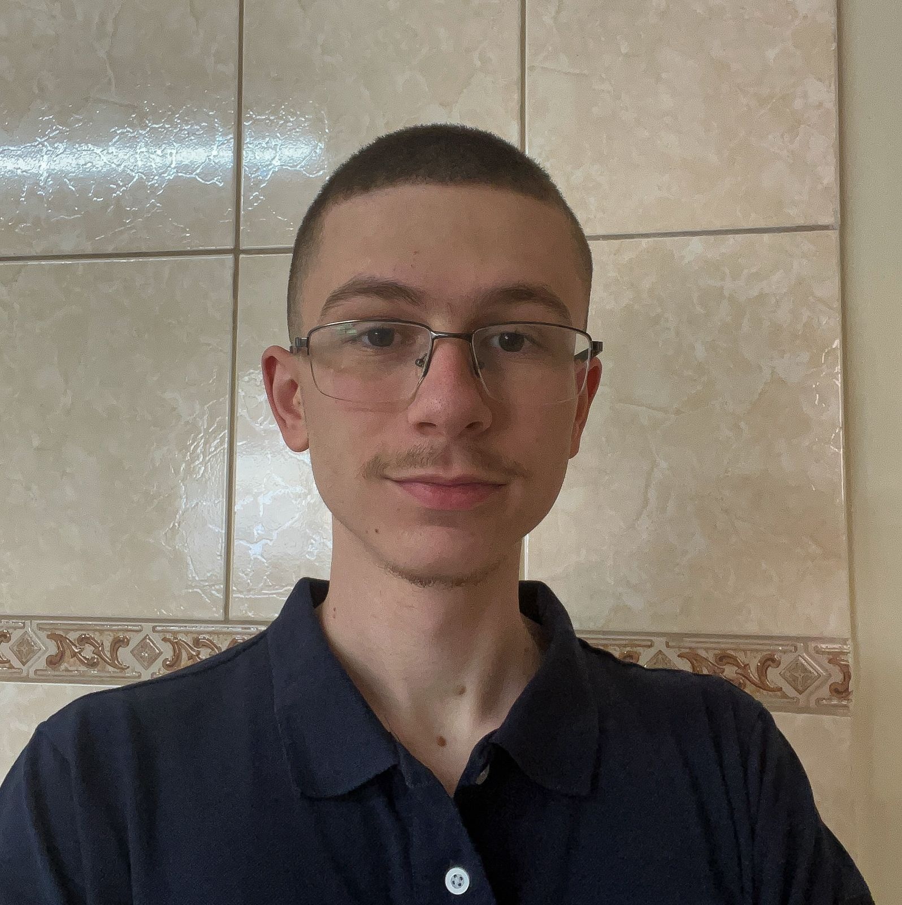
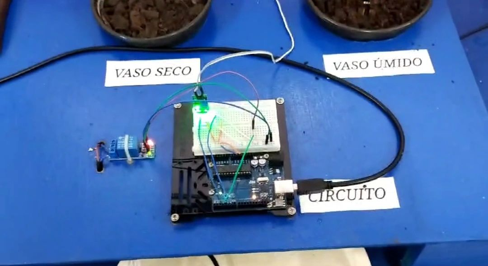
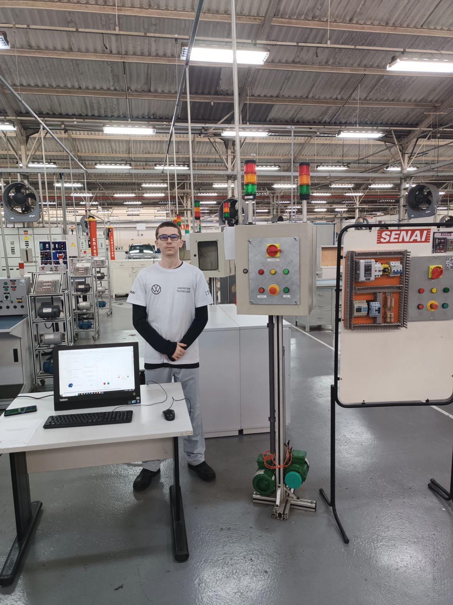
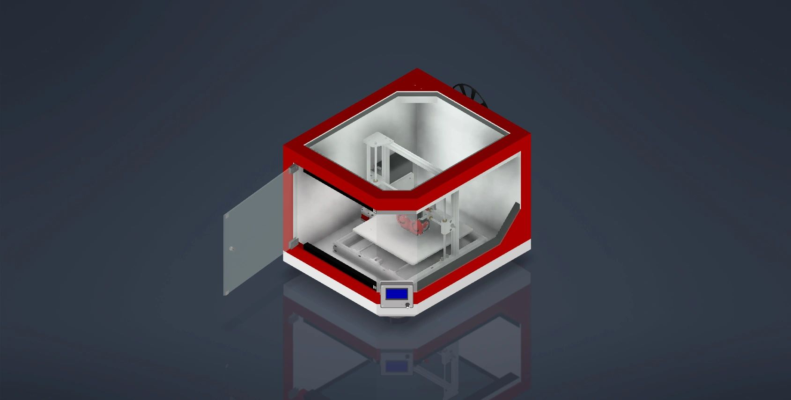
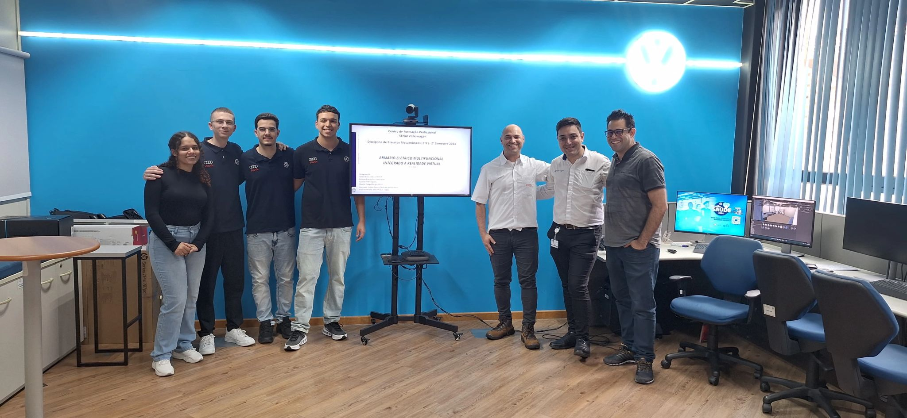

Biografia
Gabriel Chicole nasceu em abril de 2006, em São Bernardo do Campo, mas cresceu a vida toda em Santo André, ao lado de seus pais. Filho único, sempre teve uma relação próxima com a família e com os amigos que fez no Colégio Adventista, onde estudou todo o ensino fundamental e construiu laços que leva para a vida inteira.
Durante o ensino médio, uniu os estudos à prática ao cursar o técnico em Elétrica, além de um preparatório para a prova do SENAI Volkswagen. A Volkswagen sempre esteve presente em sua história: foi o lugar onde seu pai construiu carreira e também o sonho que inspirou Gabriel a seguir os mesmos passos. Em 2023, realizou esse desejo ao ingressar na empresa, conciliando o curso do SENAI com sua formação escolar, concluída no mesmo ano.
No segundo semestre de 2024, ingressou na FEI em Engenharia Mecânica. Mas, após um ano de experiências e descobertas, percebeu que sua verdadeira paixão estava na área da tecnologia e programação. Decidiu, então, migrar para Ciências da Computação, curso que segue atualmente.
Em 2025, conquistou uma nova etapa importante em sua trajetória: foi efetivado na Volkswagen, onde hoje atua como montador de produção. Sua jornada é marcada pela dedicação, pela vontade de aprender e pela busca em alinhar seus interesses pessoais com os desafios profissionais.
Formação Acadêmica
- Colégio Adventista (2010-2020)
- Colégio Pentágono (2021-2022)
- Colégio Clóvis Bevilacqua - Técnico em Eletrônica (2023)
- Senai São Paulo - Operador de Processos de Manufatura Automotiva (2023)
- Senai São Paulo - Técnico em Mecatrônica (2024)
- FEI - Engenharia Mecânica (2024-2025)
- FEI - Ciência da Computação (2025 - atualmente)
Experiência
- Aprendiz de Mecânico Geral - Volkswagen do Brasil (2023-2024)
- Montador de Produção - Volkswagen do Brasil (2025 - atualmente)
Projetos
Irrigador Automatizado
Este projeto buscou a simplicidade do sistema de irrigação automático, que pode ser feito por qualquer um em casa, podendo ser utilizado em um sistema industrial agropecuário em larga escala.
Um sistema de irrigação ineficiente pode levar ao desperdício significativo de água. Para resolver isso, propormos a pesquisa de um sistema automático que melhore a eficiência do uso da água, proporcionando benefícios econômicos e ambientais.
Para o projeto, foi-se utilizado um Arduíno UNO R3, juntamente com sensores de umidade, módulo relé e bomba d'água.
O projeto cumpriu seus objetivos propostos pela equipe, facilitando a irrigação de plantas e evitando o desperdício de água.
Painel Elétrico
O painel desenvolvido permite a ligação direta de um motor trifásico e foi uma experiência enriquecedora que envolveu diversas competências da área. Na parte mecânica, realizamos o corte da chapa nas dimensões adequadas, furação com serra copo e parafusos autobrocantes, dobra da chapa, corte e fixação das canaletas, além do corte e instalação dos trilhos din. Já na parte elétrica, montamos os principais componentes, como chave geral, disjuntor motor, contator, fonte, botoeira liga e desliga, botão de emergência, disjuntor monopolar e bornes.
Para complementar, utilizamos o software CADe SIMU 4.0 para confeccionar e simular o diagrama elétrico do painel, garantindo maior clareza e didática na apresentação. O objetivo do trabalho foi aplicar de forma prática todos os conhecimentos adquiridos na disciplina de Elementos Elétricos de Acionamento, no SENAI Volkswagen, desde a preparação mecânica até a montagem e organização elétrica.
Modelagem Impressora 3D
Utilizamos uma impressora existente como ponto de partida e implementamos uma série de melhorias significativas. Entre elas, destacam-se o enclausuramento, que trouxe maior estabilidade térmica e segurança ao processo de impressão, a adição de uma segunda extrusora, permitindo a utilização de múltiplos materiais ou cores, e o aumento da mesa de impressão, que expandiu a área disponível para a criação de peças maiores.
Essas melhorias não apenas aumentaram a funcionalidade da impressora, como também a tornaram mais versátil para diferentes aplicações industriais e de prototipagem, ampliando seu potencial de uso e eficiência nos processos de fabricação.
Armário Elétrico Multifuncional Integrado à Realidade Virtual
Meios Físicos: Automação e Estruturação do Armário Elétrico
Nesta etapa, focamos na montagem física do armário. Com uma estrutura robusta e organizada, realizamos o cabeamento nos padrões VASS e a instalação dos componentes de controle para facilitar o comissionamento de forma prática e segura. Todos os detalhes, desde o layout interno até as medidas de segurança, foram pensados para oferecer eficiência e reduzir riscos operacionais, atendendo às exigências do ambiente industrial.
Meios Digitais: Digitalização e Realidade Virtual
Esta etapa envolveu a digitalização, onde iniciamos com modelagens 3D no software Autodesk Inventor. Os componentes foram adquiridos diretamente dos sites dos fornecedores, exceto por um módulo sem fio da Phoenix Contact, que foi modelado internamente desde o início. Utilizamos o Blender como uma ponte dos arquivos CAD do Inventor para o Unity. Também modelamos nosso armário completo e a sala onde ele seria alocado. Já no Unity, usufruímos do XR Plugin para a implementação da cena em um ambiente de realidade virtual. Usamos o HTC VIVE Pro 2 para a imersão no RV. Com o uso da realidade virtual, é possível visualizar os componentes em um ambiente seguro, ideal para simulações e treinamentos.
Sonhos
Meu maior sonho é construir uma família com a minha futura esposa, proporcionando uma vida feliz e cheia de amor para nossos filhos, e também retribuir tudo o que meus pais fizeram por mim, demonstrando gratidão e cuidado. Ao mesmo tempo, busco realização profissional ao trabalhar em algo que realmente me desafie e me permita crescer todos os dias. Tenho orgulho de estar na Volkswagen, onde posso aplicar meus conhecimentos, aprender com cada experiência e contribuir de forma concreta para os processos e projetos da empresa. Para mim, a verdadeira realização vem de unir paixão, dedicação e aprendizado contínuo, transformando esforço em resultados e construindo uma vida e uma carreira que reflitam meus valores e minha vontade de evoluir.
Hobbies
Meu maior hobby é jogar videogame, uma paixão que tenho desde pequeno e que sempre me trouxe diversão e desafios. Além disso, adoro passar tempo com minha família e minha namorada, valorizando esses momentos de conexão e carinho. Também gosto de assistir vídeos no YouTube, explorando conteúdos que me interessam, e de criar projetos de programação, que me permitem unir criatividade e aprendizado em algo prático e envolvente.